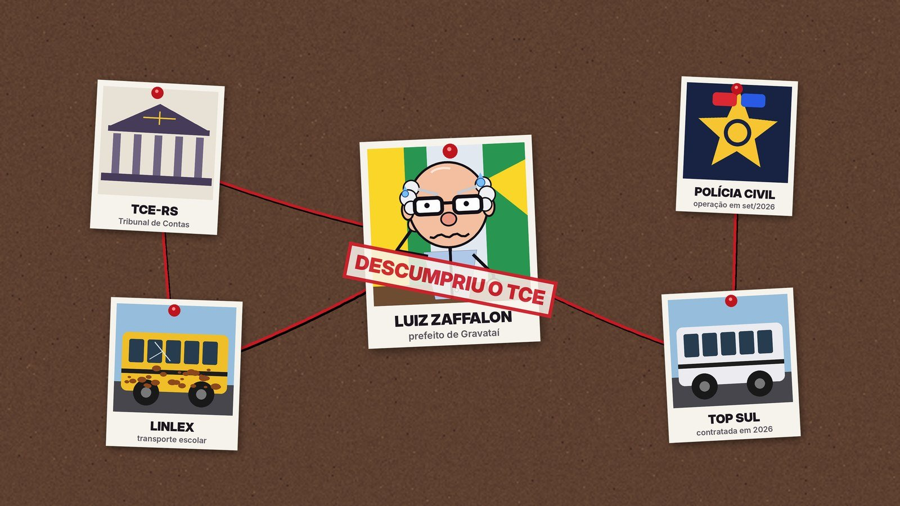

Gravataí · Educação
Crianças em ônibus sem seguro, R$ 2,4 milhões a devolver e um prefeito que ignorou o TCE
Ônibus velhos, sem seguro e sem autorização levaram alunos de Gravataí enquanto a Linlex recebia milhões. O Tribunal de Contas mandou devolver R$ 2,4 milhões e responsabilizou Luiz Zaffalon. Agora, a polícia investiga fraude nas licitações. A Prefeitura diz que é vítima.
Sob Vigia
19 DE NOV DE 2026, 17:29
Foto: Os pontos ligados pelo TCE-RS, pela Polícia Civil e pelos dados de licitação. (Ilustração: Sob Vigia)
Em fevereiro de 2024, o Tribunal de Contas do Estado deu uma ordem clara à Prefeitura de Gravataí: parar de pagar à Linlex Transportes uma parcela que a empresa cobrava indevidamente no contrato do transporte escolar. A Prefeitura recorreu. Perdeu por unanimidade. E continuou pagando.
A conta chegou: R$ 853.640,24, tirados do Fundeb, o fundo que existe para pagar a educação das crianças. Em junho deste ano, o TCE-RS decidiu que esse dinheiro tem de voltar aos cofres públicos, e que quem responde por ele, junto com a empresa, é o prefeito Luiz Zaffalon.
Nas palavras do conselheiro relator, Marco Peixoto, o prefeito, "por sua vontade, não cumpriu a decisão cautelar desta Corte de Contas". O Tribunal classificou a conduta como "erro grosseiro".
Ônibus velho, sem seguro, com criança dentro
Os R$ 853 mil são só uma parte da história. Ao examinar os dois contratos da Linlex com a Prefeitura, firmados em 2024, a auditoria do TCE encontrou um serviço muito diferente do que foi contratado e pago:
- em mais de 70% das viagens, rodaram ônibus com mais de 12 anos de uso, acima do limite do contrato;
- 114 dos 136 veículos não tinham a autorização exigida para transporte escolar;
- 112 dos 136 rodavam sem seguro;
- a empresa nunca apresentou a garantia do contrato, de cerca de R$ 1,16 milhão, que protegeria o município em caso de prejuízo.
Ou seja: durante dois anos, crianças da rede pública de Gravataí foram levadas à escola em veículos que não cumpriam as regras mínimas de segurança, e a Prefeitura pagou como se cumprissem.
| O que o TCE mandou devolver | Valor | Quem paga |
|---|---|---|
| Ônibus mais velhos que o permitido | R$ 1.555.401,90 | Linlex |
| Veículos sem autorização de transporte escolar | R$ 21.780,34 | Linlex |
| Veículos sem seguro | R$ 32.614,55 | Linlex |
| Pagamento que o TCE tinha mandado suspender | R$ 853.640,24 | Linlex e o prefeito Luiz Zaffalon |
| Total | R$ 2.463.437,03 |
Além da devolução, o prefeito, a empresa e o fiscal dos contratos, Valdomiro César Silva da Rosa, levaram multa de R$ 1.500 cada. As contas da Linlex e do fiscal foram julgadas irregulares. A secretária de Educação, Aurelise Braun Neves Moreira, e a diretora administrativa da Secretaria, Elisângela Feijó Manomics, tiveram as contas aprovadas com ressalvas. A decisão foi enviada ao Ministério Público e à Procuradoria Regional Eleitoral. Ainda cabe recurso.
R$ 71 milhões em três anos
Não se trata de um contrato qualquer. A Linlex é há anos a dona do transporte escolar de Gravataí. Pelos dados que a própria Prefeitura informa ao TCE-RS, o município gastou com a empresa:
- R$ 16,8 milhões em 2023;
- R$ 25,4 milhões em 2024;
- R$ 28,8 milhões em 2025.
São R$ 71 milhões em três anos.
A polícia bate na porta
O que o TCE apontou virou caso de polícia. Em 16 de setembro, segundo o GZH, a Polícia Civil deflagrou uma operação contra um grupo empresarial suspeito de fraudar as licitações do transporte escolar de Gravataí: duas prisões temporárias, 13 mandados de busca e apreensão, 12 imóveis e oito veículos sequestrados, no RS e em Santa Catarina.
Um dos presos temporariamente, ainda segundo o GZH, foi Everaldo Schussler, da Linlex, detido em casa, em Gravataí. A suspeita da polícia é de um esquema em que empresas ligadas aos mesmos controladores entravam nas mesmas licitações só para fingir concorrência. O delegado Cassiano Cabral, diretor do departamento que conduz o caso, falou em "um modelo de fraude que transforma a concorrência pública em mera aparência".
Segundo a polícia, os investigados poderão responder por fraude a licitação, organização criminosa, falsidade ideológica, uso de documento falso e lavagem de dinheiro. Ninguém foi condenado, e todos têm direito à presunção de inocência. A polícia afirmou não ter, até agora, evidências de envolvimento de servidores públicos.
Sai a Linlex, entra a Top Sul
Em janeiro de 2026, sem licitação, a Prefeitura fez duas contratações emergenciais para o transporte escolar. Os registros enviados ao TCE-RS mostram quem levou:
| Contratação emergencial | Contratada | Valor |
|---|---|---|
| Dispensa 1/2026 (alunos da rede estadual) | Top Sul | R$ 6.047.332,03 |
| Dispensa 2/2026 (rede municipal) | Top Sul | R$ 9.639.982,78 |
| Sogil | R$ 9.639.358,05 |
Somados, os contratos da Top Sul dão R$ 15,69 milhões. É o mesmo valor, "mais de R$ 15,6 milhões", que o GZH aponta como os contratos de 2026 investigados pela polícia. A Top Sul está entre as cinco empresas investigadas. A Linlex também se inscreveu na Dispensa 2/2026, mas não aparece com proposta registrada.
Na Receita Federal, Linlex e Top Sul são empresas diferentes, com sócios diferentes: Everaldo Schussler, na Linlex, e Marcos Pereira Prates, na Top Sul. Não há sócio, endereço ou telefone em comum nos cadastros públicos. Se existe ligação entre as duas, é o que a polícia está investigando.
E a troca não resolveu o problema. Segundo o GZH, cerca de um mês antes da operação, 12 rotas do transporte escolar pararam porque os motoristas da Top Sul diziam estar com salários atrasados. Quem ficou sem ônibus foram os alunos.
"Somos vítimas"
Em nota ao GZH, a Prefeitura disse que se considera "vítima de eventual fraude", que já tinha identificado uma tentativa de fraude em um pregão e que lançaria novo edital.
É uma versão difícil de conciliar com a decisão do TCE. O Tribunal avisou a Prefeitura em fevereiro de 2024. A Prefeitura recorreu, perdeu e seguiu pagando. Para o TCE, quem decidiu continuar pagando foi o prefeito.
O espaço está aberto para a Prefeitura e para a Linlex. O Sob Vigia quer saber: - por que a ordem do TCE de fevereiro de 2024 não foi cumprida; - se o município recorreu da decisão e se já cobrou da Linlex os R$ 2,4 milhões; - quanto já foi pago à Top Sul em 2026 e se o novo edital foi publicado.
Fontes
- TCE-RS, Processo de Contas Especiais nº 021909-0200/24-5, Segunda Câmara, sessão de 24/06/2026.
- GZH, "Polícia investiga empresas por suspeita de fraudes em licitações do transporte escolar em Gravataí", setembro de 2026.
- TCE-RS, dados abertos de empenhos e liquidações dos municípios, 2023 a 2025, e LicitaCon (licitações, licitantes e propostas), 2023 e 2026.
- Receita Federal, Cadastro Nacional da Pessoa Jurídica (dados abertos), consulta em 19/11/2026.